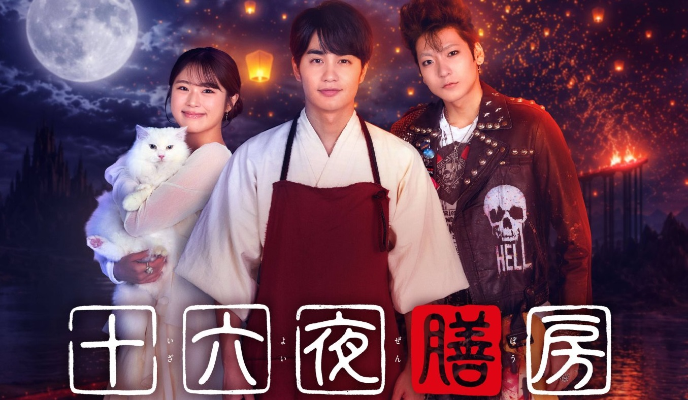

Izayoi Zenbou (2026)
十六夜膳房
Ashame X Pyosub

Cerita ini berlatar di Yomi, alam tempat manusia pergi setelah kematian. Di sana terdapat "Restoran Yomi" yang menyajikan "hidangan terakhir" bagi mereka yang telah tiada, guna membantu mereka melepaskan penyesalan serta keterikatan yang masih tertinggal dari dunia orang hidup.
Di tempat itu, mereka yang telah meninggal memesan hidangan yang paling lekat dalam ingatan semasa hidup mereka. Seorang koki yang dikenal sebagai Meng Po memulihkan jiwa mereka melalui satu hidangan tersebut, membebaskan mereka dari penyesalan, keterikatan, dan ikatan duniawi, sebelum akhirnya melepas mereka melanjutkan perjalanan menuju kehidupan berikutnya.